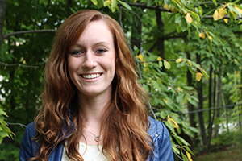
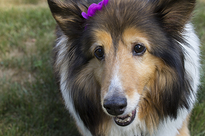

Our Team

Katie
Katie is a graphic designer from Cleveland, OH. She recently moved to NYC to further her career and is loving it. Her specialities include illustration, page layout and photo retouching. She is currently taking a web design class to further her digital skills.

Hannah
Hannah is a 13 year old Shetland Sheepdog. She enjoyed a successful career in the human hearding business and now spends her retirement begging for food in the kitchen and barking at the neighbors. She is an integral part of the K.O team.
New York, NY